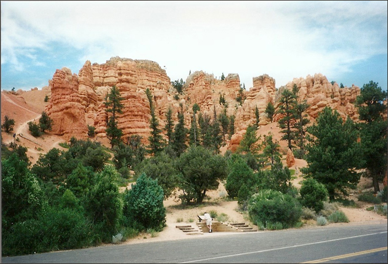
.
Bryce Canyon National Park is located in south-western Utah. The major feature of the park is Bryce Canyon, which despite its name, is not a canyon, but a collection of giant natural amphitheaters along the eastern side of the Paunsaugunt Plateau.
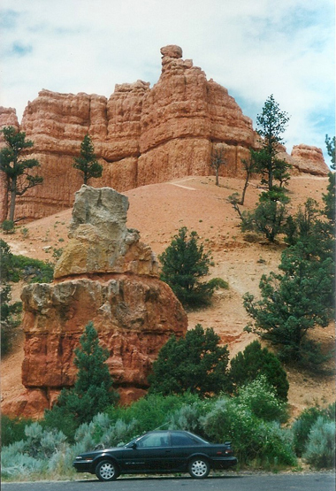
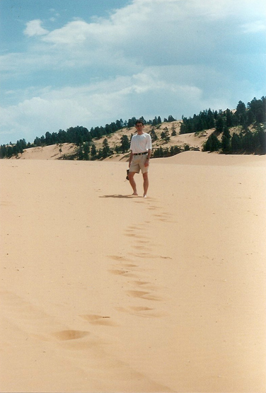
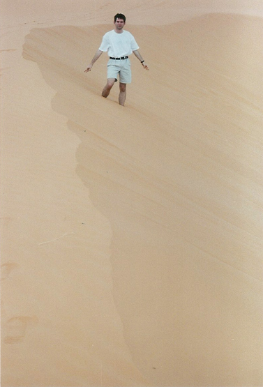
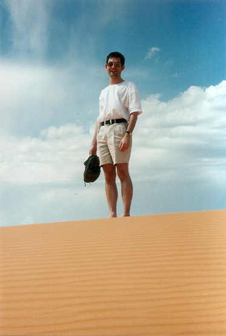
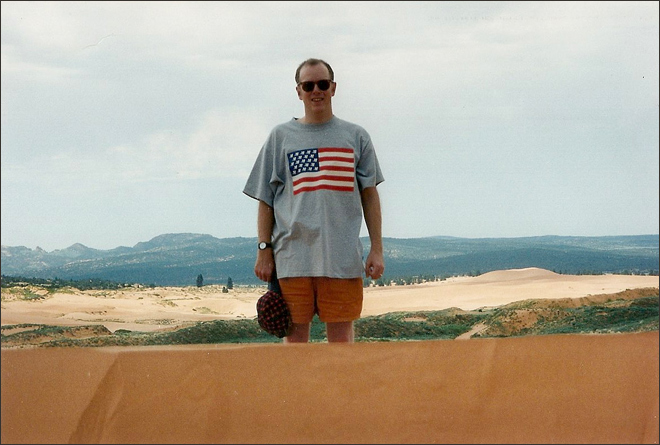
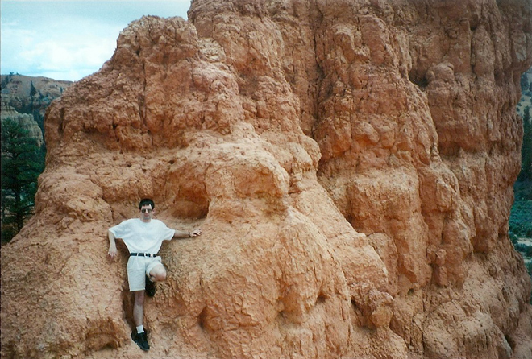
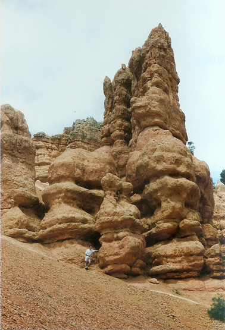
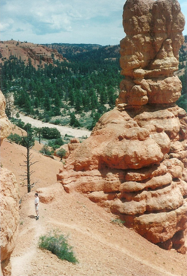
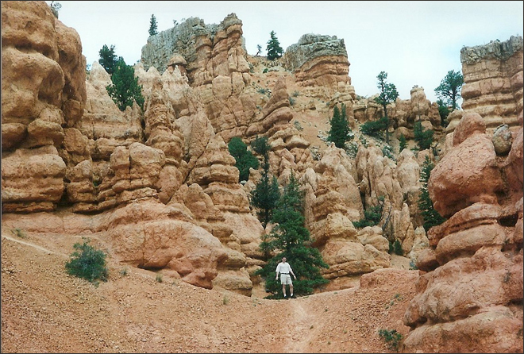
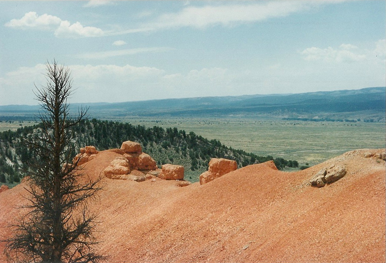
Bryce is distinctive due to geological structures called hoodoos, formed by frost weathering and stream erosion of the river and lake bed sedimentary rocks. The red, orange and white colours of the rocks provide spectacular views for park visitors. It is much smaller, and sits at a much higher elevation than nearby Zion National Park. The rim at Bryce varies from 8,000 to 9,000 feet (2,400 to 2,700 m).
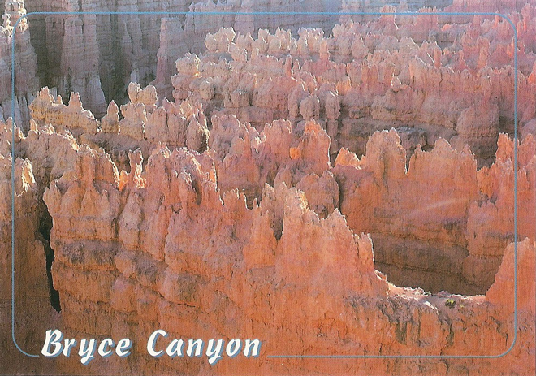
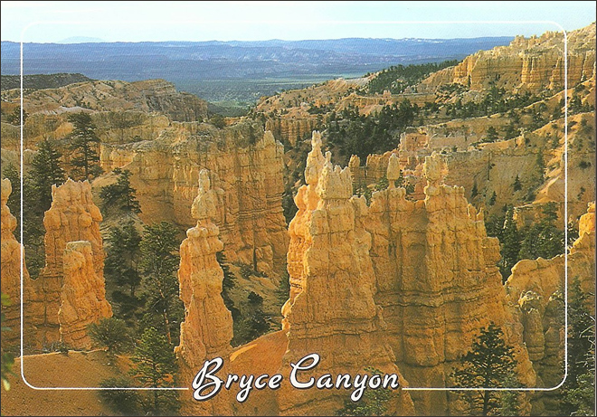
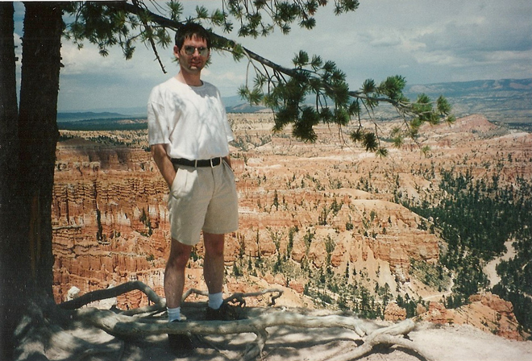
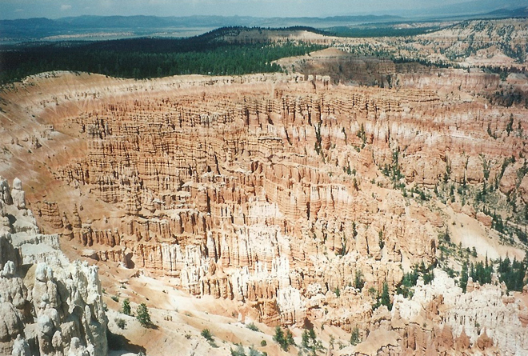
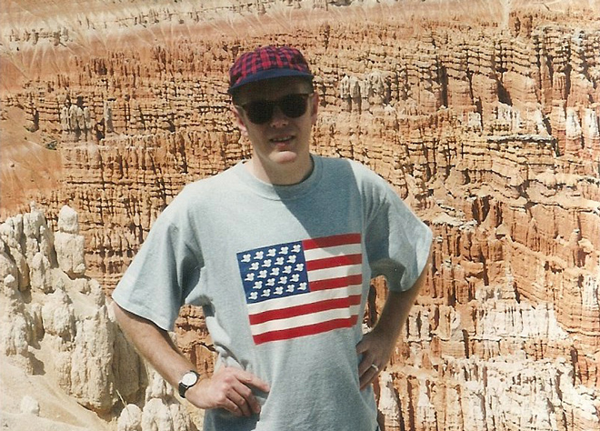
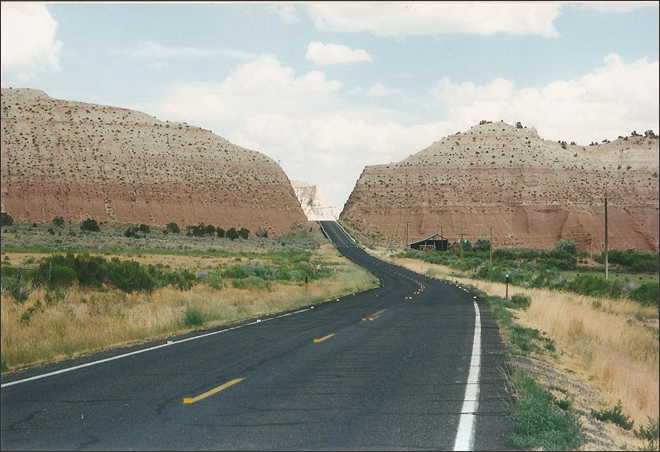
Then a drive along Highway 12 ('The Boulder Trail') which took us through a landscape which looked as if it was on the moon.
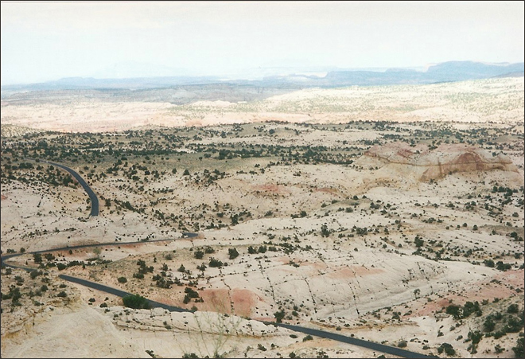
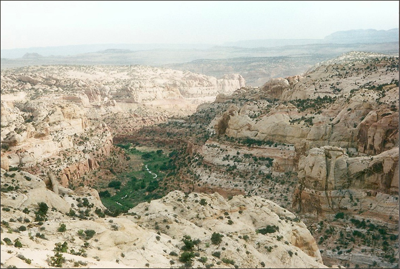
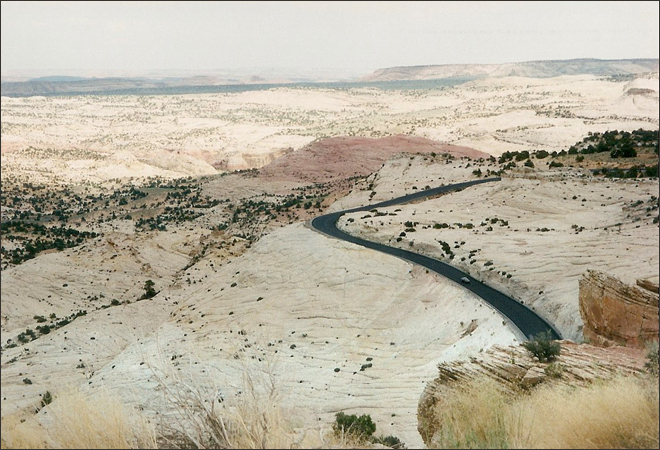
Finally, arrival at an oasis of green - The Boulder Mountain Lodge - for a decent dinner and escape from the sun.
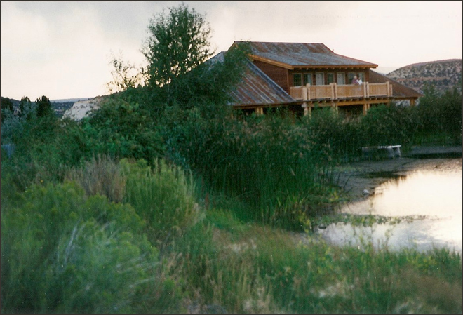
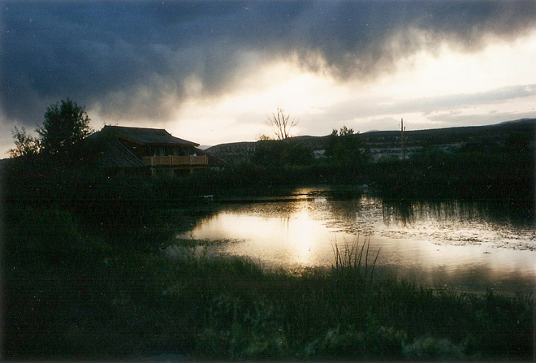
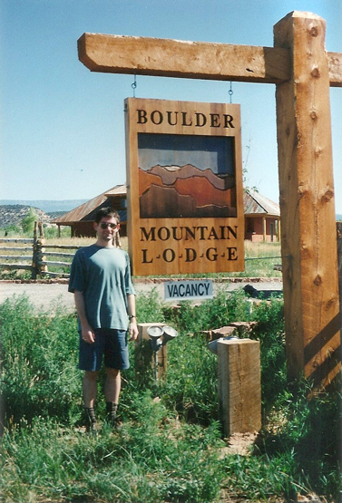
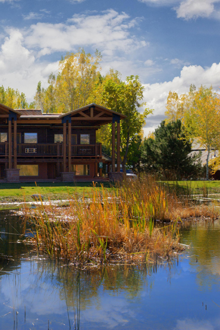